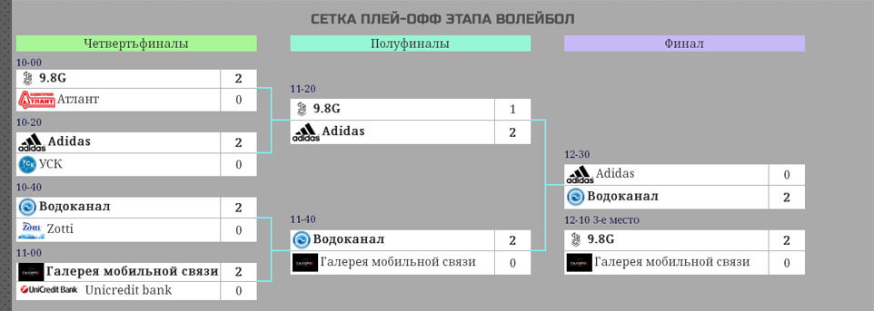

Волейбол - "Битва корпораций" II сезон
Турнир по волейболу 5 ноября 2016 года собрал 16 команд. Команды были разбиты на группы по 4 команды. Одна из групп состояла из 5-ти команд и ещё одна из групп - из трёх. Спасибо "Life"!
В начале нашего турнирного пути, волею жребия, мы в очередной раз получили в соперники команду «Freshline». Это, между прочим, уже в третьем туре подряд. Ранее в гольфе с незначительным перевесом одержала наша команда. Во втором этапе мини-футбол выигрыш по пенальти одержали наши соперники. До этого матча в личных счётах между командами был паритет и так, как волейбол паритета не допускает, чаши весов предстояло склонить лишь на одну сторону.
Наша сборная по волейболу, не имеющая в своём составе ни одного волейболиста, готовилась к соревнованиям по ускоренной программе. В течение двух месяцев, раз в неделю, проводились игровые тренировки. Тренировки поспособствовали улучшению игровых навыков и налаживанию понимания между участниками.
Из постоянных присутствующих на тренировках были выбраны шесть человек: Контантин Галкин, Артём Воронов, Дарина Бондарчук, Анатолий Сидь, Виктор Лукьянченков и Олег Яритенко, им и предстояло выйти в старте. Также, к команде присоединись Ольга Иваненко и Вячеслав Педченко. Лишь Ольга была на одной тренировке.
ХТС-Freshline 2-0 (15-8, 15-10)
В первом сете «ХТС» изначально повели в счёте и разрыв постепенно возрастал. Итоговый счёт 15-8 в нашу пользу примерно правильно отражал наши усилия и волю к победе. Сразу же, в начале второго сета в команде вышло 2 новых человека. Таким образом, уже все были заиграны. Игра во втором сете практически не поменялась, за исключением нескольких подач, во время которых противник воспрял духом и сократил отставание. Нашей команде удалось вновь наладить взаимодействие, результатом которого явился счёт 15-10. Мы выиграли 2-0 в этой партии и отправились на трибуну смотреть за игрой будущих соперников.
ХТС-Unicredit bank 1-2 (9-15, 15-6, 6-15)
Это была вторая игра банкиров подряд, а мы выходили на поле немного отдохнув после первого тайма и, может быть, расслабились. Первый сет начался более-менее ровно, но соперники играли уверенней на блоках, а у нас несколько раз не получалось точно набрасывать мяч на сетку, для того чтобы атаковать. Во втором сете мы бросились отыгрываться и это очень даже ярко и эффективно получилось. В третьем сете мы не смогли принять восемь подач от одного человека. Потом, ухватились за шанс, но было уже поздно.
ХТС-9.8G 0-2 (9-15, 12-15)
Ещё по игре с банкирами было видно, что "9.8G" не раскрывает свой потенциал и технический арсенал на полную мощь. Как видно из счёта, мы создавали сопротивление для лидера нашей группы и во втором сете почти их догнали. Однако, соперники включились и довели дело до победного и логичного. Я видел итоговый счёт на табло и он гласил, что мы забили 13, но в протокол внесена другая цифра.
Итоги
Мы не вышли из группы. "Unicredit" посопротивлялись и вылетели из 1/4 финала. "9.8G" имели очень высокие шансы на финал, но отправились играть за третье место, после проигрыша 1-2 от "Adidas" в драматично матче. В матче за 3-е место "9.8G" уверенно обыграли "Галерею мобильной связи", обидчиков "Unicredit bank".
"ХТС" заняли 10 место, среди 17 команд (16 явилось) по волейболу. В прошлом году были 14-ми, но уже были шансы выйти даже из группы. Мы победили команду «Freshline» и вышли в нашей очной дуэли в лидеры.
Кликнув по этой картинке, вы можете подробно посмотреть весь турнирный путь наших спортсменов:
Тройка призёров этапа волейболвыглядит так:
- Водоканал
- Adidas
- 9.8G
Наша команда потеряла две позиции в общем зачёте "Битвы корпораций II сезона"
- Zotti - 11
- Харьковводоканал - 11
- Adidas - 15
- Галерея мобильной связи - 19
- ХТС - 21
- 9.8G - 25